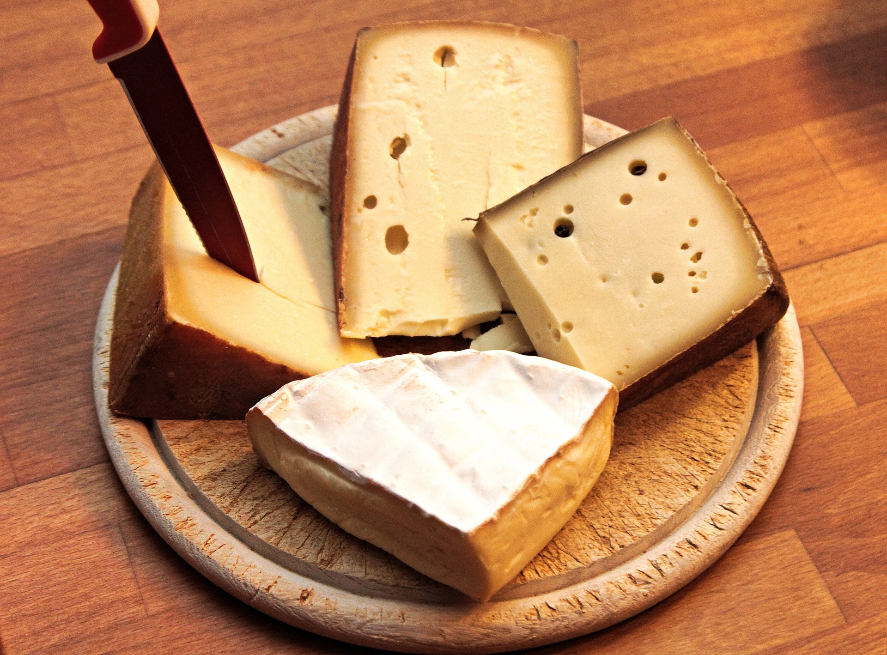

음식
퐁뒤
이탈리아와 프랑스 등 알프스 산맥에 위치한 지역에서도 널리
즐기는 일종의 치즈를 녹인 전골음식으로 세계적으로 유명하다.
라클레테
단단하게 굳어진 치즈를 불에 직접 쬐어 녹인 후 긁어내 채소나 빵, 고기 등에 얹어서 먹는 음식이다.
에멘탈 치즈

치즈 겉면은 매끈하고 밝은 황금빛 껍질을 가지고 있으며 안은 유연하고 말랑말랑한 샛노란색이며
여기저기 크고 작은 구멍이 송송 뚫려있다. 호두와 유사한 맛이 난다.